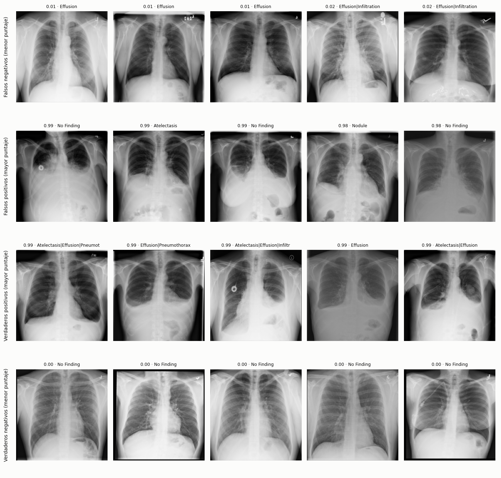
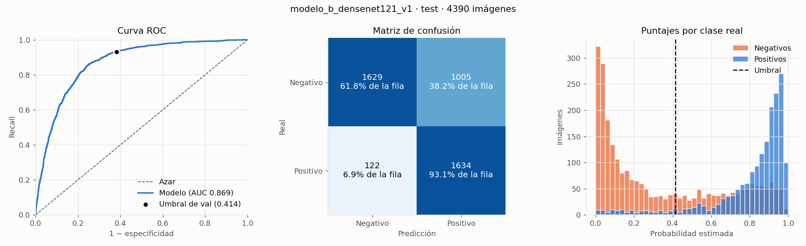

Trabajo final · Inteligencia Artificial · IUA 2026
Una red DenseNet121 que recibe una radiografía PA y estima si tiene derrame pleural. Entrenada con NIH ChestX-ray14 y evaluada una sola vez sobre pacientes que nunca vio.
El derrame pleural es líquido acumulado entre el pulmón y la pared del tórax. En la radiografía se ve como una opacidad en las bases. Es frecuente en pacientes internados, y marcar las radiografías sospechosas podría ayudar a decidir cuáles revisar primero.
El proyecto responde una sola pregunta: ¿esta radiografía PA tiene la etiqueta Effusion en NIH ChestX-ray14? La métrica de éxito es el F1-Score, y la referencia sin IA es marcar todo como positivo, que da F1 0,571 con 40% de positivos.
Es un prototipo académico: no diagnostica. Con la proporción real de derrames, la mayoría de sus alarmas serían falsas.
Se compararon tres formas de armar train: sacar negativas (A), repetir positivas (B) y elegir negativas como las del test (C). El modelo final es el B, elegido antes de abrir el test por tener el mayor AUC de validación. Entre A y B no se detectó una diferencia significativa (el intervalo de confianza de la diferencia incluye 0).
Una radiografía entra por arriba y sale un puntaje. Todo el recorrido es el mismo en entrenamiento, validación, test y en rx-predecir.
DenseNet121 es la arquitectura de CheXNet, un trabajo de referencia sobre este mismo dataset. En sus bloques densos, cada capa recibe los mapas de características de todas las anteriores del bloque. Partir de los pesos de ImageNet (transferencia de aprendizaje) permite entrenar con unas 22.000 radiografías en lugar de millones. La red solo ve los píxeles: ni la edad, ni el sexo, ni los estudios previos.
La media (0,511) y el desvío (0,263) se calcularon una vez, solo con train, y se aplican iguales a validación, test e imágenes nuevas. Si cada conjunto usara los suyos, la red recibiría imágenes distintas de las que vio al entrenar.
El train del modelo B tiene 22.594 radiografías, 4.108 con derrame. Para llegar al 40% de positivas, cada positiva se repite 3 veces por época (30.810 ejemplos), solo en train. También solo en train se aplica un aumento de datos leve: rotación ±7°, escala ±5% y desplazamiento ±5%, sin espejar. La pérdida es entropía cruzada binaria sobre el logit, con AdamW (lr 1e-4) y lotes de 32. Validación (1.813 radiografías) elige la época, con early stopping por AUC y paciencia 4 (la mejor fue la primera), y el umbral 0,414 que maximiza el F1. El test se evaluó una sola vez, con todo ya fijado.
El MVP es un comando de consola. El modelo entrenado y cuatro radiografías de ejemplo vienen en el repositorio, así que corre apenas se instala:
$ rx-predecir examples/radiografias/*.png modelo_b_densenet121_v1 · umbral 0.414 (elegido en validación) 00000643_006.png 0.575 Effusion 00004526_023.png 0.345 sin Effusion 00022899_024.png 0.940 Effusion 00030344_002.png 0.186 sin Effusion
| Imagen | Etiquetas de NIH | Puntaje | Resultado |
|---|---|---|---|
00022899_024 | Consolidation, Effusion, Mass | 0,940 | Verdadero positivo |
00004526_023 | Cardiomegaly, Effusion | 0,345 | Falso negativo |
00000643_006 | Pneumothorax | 0,575 | Falso positivo |
00030344_002 | No Finding | 0,186 | Verdadero negativo |
Las cuatro se eligieron al azar, una por cada celda de la matriz de confusión, para mostrar aciertos y errores. Con --json el resultado sale en JSON, listo para otra aplicación. Abajo, los cinco casos más seguros de cada celda en la submuestra del test oficial:

Varios falsos positivos con puntaje 0,98 muestran opacidades evidentes: las etiquetas de NIH salen de procesar informes, y tienen errores.
El modelo no responde "sí" o "no": da un puntaje entre 0 y 1, y el umbral decide desde dónde se marca Effusion. Mové el control, o tocá el gráfico, y mirá cómo cambian los aciertos y los errores.
Son las 1.813 radiografías de validación del modelo B, con 40% de positivas: ahí se fijó el umbral 0,414 maximizando el F1, y el test no se usa para elegirlo. Al bajar el umbral sube el recall (se pierden menos derrames) y bajan la especificidad y la precisión (hay más falsas alarmas). En 0 todo se marca como derrame y el F1 cae a 0,571, la referencia sin IA.
Con 0,414 se marcan 825 de 1.813 radiografías: se pierden 105 de 725 derrames y hay 205 falsas alarmas.
| Predice Effusion | Predice sin Effusion | |
|---|---|---|
| Con derrame (725) |
620VP · detectados | 105FN · derrames perdidos |
| Sin derrame (1.088) |
205FP · falsas alarmas | 883VN · bien descartadas |
VP: verdaderos positivos · FN: falsos negativos · FP: falsos positivos · VN: verdaderos negativos.
Datos: models/modelo_b_densenet121_v1/evaluacion_val/predicciones_val.csv, con los puntajes redondeados a 4 decimales y embebidos en la página: todo se calcula en el navegador, sin servidor. En el test, con el mismo umbral, el F1 fue 0,744.
Modelo B en una submuestra del test oficial de NIH (40% de positivas): 4.390 radiografías de 1.686 pacientes, evaluadas una sola vez con el umbral elegido en validación.

| Modelo | Conjunto | F1 (IC 95%) | AUC |
|---|---|---|---|
| A · sacar negativas | Validación | 0,795 (0,769–0,821) | 0,898 |
| B · repetir positivas | Validación | 0,800 (0,773–0,825) | 0,905 |
| B · modelo final | Submuestra del test oficial (40% de positivas) | 0,744 (0,726–0,761) | 0,869 |
| Control | Test nuevo | 0,775 (0,729–0,814) | 0,895 |
| C · negativas como el test | Test nuevo | 0,784 (0,736–0,823) | 0,897 |